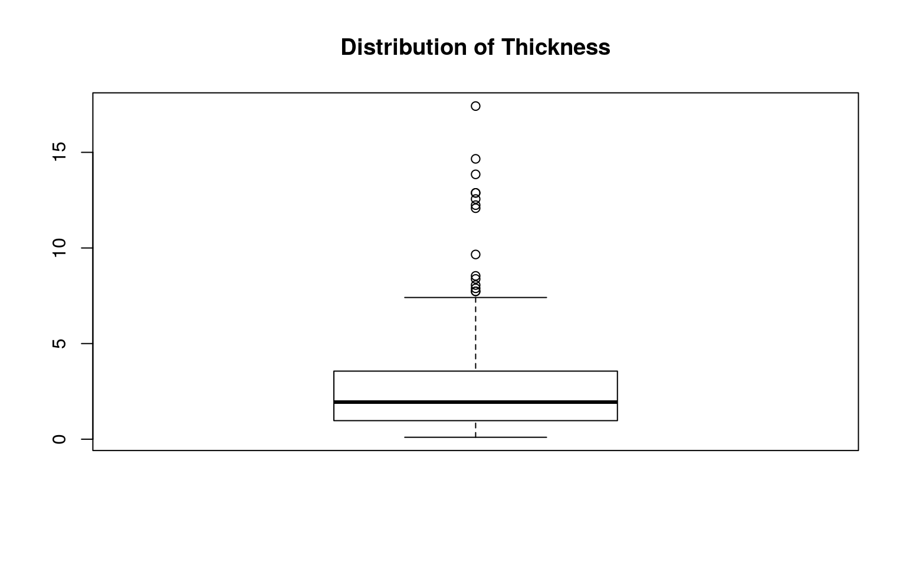
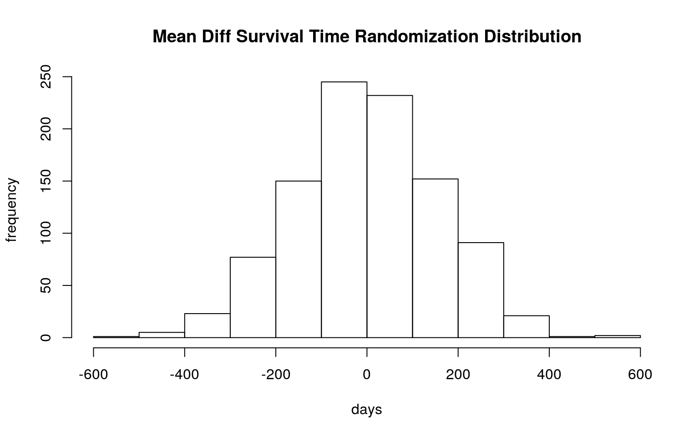
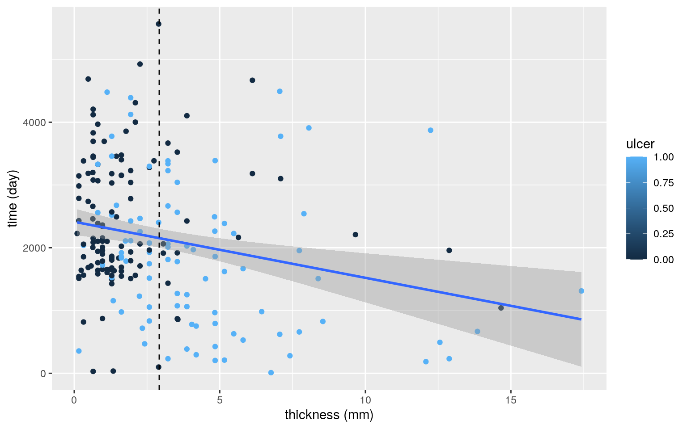
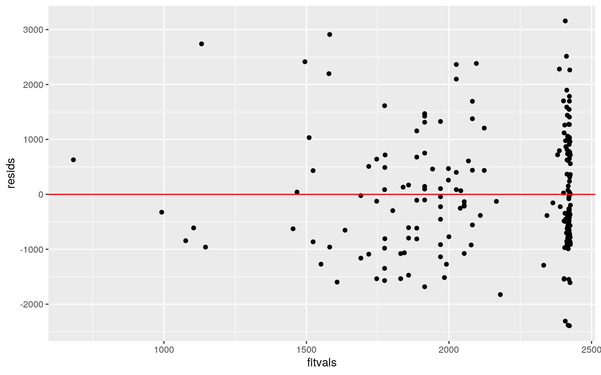
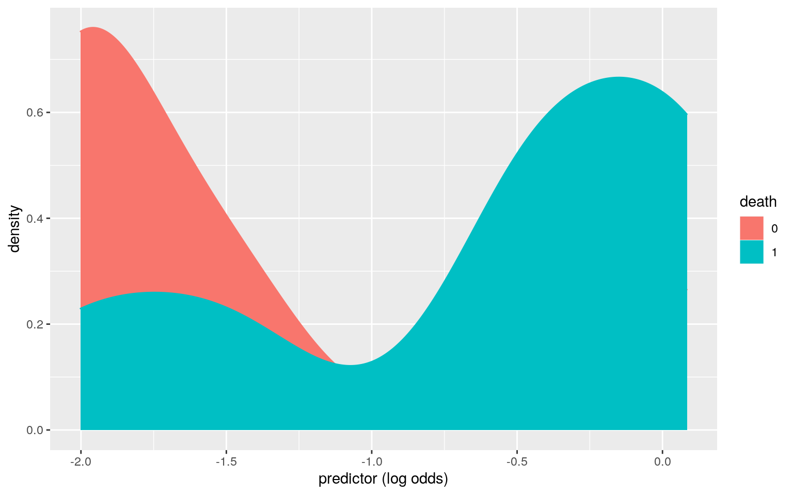
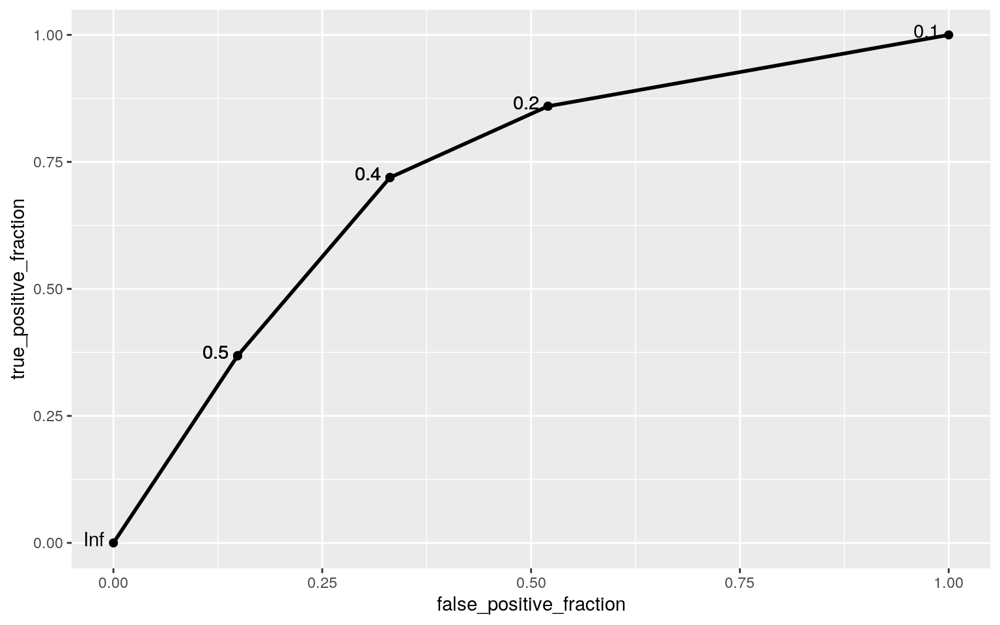

Develops in melanocytes–the skin cells that produces melanin–melanoma is the most severe type of skin cancer that kills will kill about 7180 patients in the U.S. in 2021, per American Cancer Society estimates. This project examines the post-ops and recovery situation of patients with malignant melanoma using data from 205 of such patients who received complete tumor removal surgery [together with 2.5 cm of surrounding skin] at the Department of Plastic Surgery in University Hospital of Odense, Denmark from 1962 to 1977. This raw dataset concerns seven variables in total, three of which categorical: ‘status’, which indicates patient status at the end of the study (1=‘died from melanoma’, 2=‘alive’, 3=‘died from causes unrelated to melanoma); ’sex’, which indicates gender of patient (1=‘male’, 0=‘female’); and ‘ulcer’, which indicates the presence of ulceration (1=‘present’, 0=‘absent’). In addition, it also contains four numerical variables: ‘time’, which indicates survival time in days since the operation; ‘age’, which indicates patient age at time of the operation, ‘year’, the year of the operation; and ‘thickness’, the thickness of tumor removed in mm. This project intends to examine the effect of age, year of operation, sex, ulceration, and thickness of tumor on survival time/status post-operation for patients that has underwent tumor-removal surgery, of which ulceration and tumor thickness are known prognostic variables.
# Acquiring and reading the raw dataset.
library(tidyverse)
library(ggplot2)
tumor <- read_csv("https://vincentarelbundock.github.io/Rdatasets/csv/MASS/Melanoma.csv")As stated in the introduction, ‘status’ is an explanatory variable with three groups, of those who died from the tumor, those who lived till at least the end of the study, and those who died of other causes. As such, it ought to be treated as the main focus compared to the other categorical variables, and thus we perform the MANOVA of all numerical variables w.r.t. to it.
# Run MANOVA for all numerical variables w.r.t. 'status'
man1<-manova(cbind(time,age,year,thickness)~status,data=tumor)
summary(man1)## Df Pillai approx F num Df den Df Pr(>F)
## status 1 0.22451 14.475 4 200 2.128e-10 ***
## Residuals 203
## ---
## Signif. codes: 0 '***' 0.001 '**' 0.01 '*' 0.05 '.' 0.1
' ' 1Since overall MANOVA is significant, we further investigate by its significant effect by performing univariate ANOVAs for each numerical variable:
# Extract Univariate ANOVAs from MANOVA, perform univerate ANOVA.
summary.aov(man1)## Response time :
## Df Sum Sq Mean Sq F value Pr(>F)
## status 1 25670731 25670731 22.543 3.878e-06 ***
## Residuals 203 231169377 1138765
## ---
## Signif. codes: 0 '***' 0.001 '**' 0.01 '*' 0.05 '.' 0.1
' ' 1
##
## Response age :
## Df Sum Sq Mean Sq F value Pr(>F)
## status 1 14 14.45 0.0517 0.8203
## Residuals 203 56687 279.24
##
## Response year :
## Df Sum Sq Mean Sq F value Pr(>F)
## status 1 25.83 25.8335 3.9507 0.0482 *
## Residuals 203 1327.41 6.5389
## ---
## Signif. codes: 0 '***' 0.001 '**' 0.01 '*' 0.05 '.' 0.1
' ' 1
##
## Response thickness :
## Df Sum Sq Mean Sq F value Pr(>F)
## status 1 74.88 74.881 8.8801 0.003235 **
## Residuals 203 1711.80 8.433
## ---
## Signif. codes: 0 '***' 0.001 '**' 0.01 '*' 0.05 '.' 0.1
' ' 1As shown, at least one status differs for all three numerical variables of ‘time’, ‘year’, and ‘thickness’. As such, I now perform post-hoc t tests for all sigificant ANOVAs.
# Post-hoc t tests for all significant numericals
pairwise.t.test(tumor$time,tumor$status,p.adj="none")##
## Pairwise comparisons using t tests with pooled SD
##
## data: tumor$time and tumor$status
##
## 1 2
## 2 < 2e-16 -
## 3 0.76 1.6e-06
##
## P value adjustment method: nonepairwise.t.test(tumor$year,tumor$status,p.adj="none")##
## Pairwise comparisons using t tests with pooled SD
##
## data: tumor$year and tumor$status
##
## 1 2
## 2 0.0034 -
## 3 0.6017 0.2672
##
## P value adjustment method: nonepairwise.t.test(tumor$thickness,tumor$status,p.adj="none")##
## Pairwise comparisons using t tests with pooled SD
##
## data: tumor$thickness and tumor$status
##
## 1 2
## 2 6.4e-06 -
## 3 0.481 0.064
##
## P value adjustment method: noneBefore summarizing, a quick dig into MANOVA assumptions that shows violation:
# 'thickness' conspicuously violates the normality assumption
boxplot(tumor$thickness,main="Distribution of Thickness")
To conclude, I’ve performed 1 MANOVA, 4 ANOVAs, and 9 t-tests, so a total of 14 tests. As such, the probability of at least one type I error=1-.95^14=0.512325. If adopting the Bonferroni adjustment, the new critical level=0.05/14 =0.003571429 for each individual test s.t. the overall critical level is kept at 5%. With this new critical level, ‘time’ differs significantly across groups 1, 2 and between groups 2, 3; ‘year’ differs significantly across groups 1. 2; and ‘thickness’ differs significantly across groups 1, 2. As for the assumptions for MANOVA, it’s pretty clear that it will not be all met: in addition to violating normality for numerical variables like ‘thickness’ (as showed in the box plot above), it is impossible that the numerical variables [e.g., tumor thickness and the number of days the patient lived after surgery] would have equal variances.
If a patient develops an ulceration, the melanoma tumor invades through the overlying epidermis rather than pushing it upwards and manifests as an absent epidermis overlying the major part of the tumor. As stated previously, it is an important known prognostic variable in predicting survival. Thus, we ask the question: does average survival time differ significantly between patients whose tumor has ulcerated and those that has not?
# Performing the randomization test.
diffs<-vector()
library(dplyr)
for(i in 1:1000){
time <- tumor%>%mutate(time=sample(tumor$time))
diffs[i] <- time%>%summarize(mean(time[ulcer==1]) - mean(time[ulcer==0]))%>%pull
}
# Mean Diff for sample/original data
samp_diff<-tumor%>%summarize(mean(tumor$time[ulcer==1])-mean(tumor$time[ulcer==0]))%>%pull
samp_diff## [1] -597.1541# p-value
mean(diffs<samp_diff | diffs>(mean(diffs)-samp_diff))## [1] 0# A plot of the randomization distribution
hist(diffs,main="Mean Diff Survival Time Randomization Distribution",xlab='days',ylab='frequency')
As shown, since p-value=0<<<0.05, we reject H0 and conclude that there is a significant difference of mean survival days among the patients whose tumor has ulcerated and those that has not.
As stated, ulceration status and thickness of tumor are the two important known prognostic variables in the survival time/status. The previous two sections has shown that ulceration is a significant predictor in survival time, and now we build a linear regression model to investigate the validity of both such variables as predictors of survival time.
# Mean-center numeric variable
tumor$thickness_c<-tumor$thickness-mean(tumor$thickness)
# Run regression model
fit1<-lm(time~thickness_c*ulcer,data=tumor)
summary(fit1)##
## Call:
## lm(formula = time ~ thickness_c * ulcer, data = tumor)
##
## Residuals:
## Min 1Q Median 3Q Max
## -2392.4 -771.7 -214.5 718.4 3157.1
##
## Coefficients:
## Estimate Std. Error t value Pr(>|t|)
## (Intercept) 2407.825 112.404 21.421 < 2e-16 ***
## thickness_c -6.441 46.022 -0.140 0.88883
## ulcer -467.110 167.239 -2.793 0.00573 **
## thickness_c:ulcer -80.326 58.068 -1.383 0.16810
## ---
## Signif. codes: 0 '***' 0.001 '**' 0.01 '*' 0.05 '.' 0.1
' ' 1
##
## Residual standard error: 1074 on 201 degrees of freedom
## Multiple R-squared: 0.09715, Adjusted R-squared: 0.08368
## F-statistic: 7.21 on 3 and 201 DF, p-value: 0.0001279To visualize the linear regression, the plot of survival time (y-axis) via tumor thickness (x-axis) colored or grouped by ulceration status is shown below:
tumor %>% select(thickness, ulcer, time) %>% ggplot(aes(thickness,time,color=ulcer)) + geom_point() + geom_smooth(method='lm') + geom_vline(xintercept=mean(tumor$thickness),lty=2) + xlab("thickness (mm)") + ylab("time (day)") As shown in the model summary, multiple R^2 says that 9.715% of the variations in the outcome are explained by the model; while adjusted-R^2 says that 8368% of the outcome is explained by the model.
# Plot residuals to check linearity
resids<-fit1$residuals; fitvals<-fit1$fitted.values
ggplot()+geom_point(aes(fitvals,resids))+geom_hline(yintercept=0, col="red")
library(sandwich)
library(lmtest)
# Breuch-Pagan test for homoskedasticity
bptest(fit1)##
## studentized Breusch-Pagan test
##
## data: fit1
## BP = 2.5825, df = 3, p-value = 0.4606# Kolmogorov-Smirnovfor normality
ks.test(resids, "pnorm", sd=sd(resids))##
## One-sample Kolmogorov-Smirnov test
##
## data: resids
## D = 0.086224, p-value = 0.09488
## alternative hypothesis: two-sidedThe residual shows that the linear model does not account very well for this particular data, since the points seems to be clustered to the right and not randomly dispersed. Since p-value for Breusch-Pagan>0.05, we conclude that we fail to reject H0 and that there is no sign of homoskedasticity. Similarly, since p-value>0.05 for one-sample K-P test, we fail to reject H0 and conclude that normality assumption is not violated.
# Compute using robust SE
coeftest(fit1,vcov=vcovHC(fit1))##
## t test of coefficients:
##
## Estimate Std. Error t value Pr(>|t|)
## (Intercept) 2407.8247 124.0606 19.4085 < 2.2e-16 ***
## thickness_c -6.4413 54.5030 -0.1182 0.906041
## ulcer -467.1098 174.9145 -2.6705 0.008194 **
## thickness_c:ulcer -80.3258 68.2294 -1.1773 0.240472
## ---
## Signif. codes: 0 '***' 0.001 '**' 0.01 '*' 0.05 '.' 0.1
' ' 1# Compare with original
coeftest(fit1)##
## t test of coefficients:
##
## Estimate Std. Error t value Pr(>|t|)
## (Intercept) 2407.8247 112.4041 21.4211 < 2.2e-16 ***
## thickness_c -6.4413 46.0220 -0.1400 0.888831
## ulcer -467.1098 167.2392 -2.7931 0.005726 **
## thickness_c:ulcer -80.3258 58.0679 -1.3833 0.168105
## ---
## Signif. codes: 0 '***' 0.001 '**' 0.01 '*' 0.05 '.' 0.1
' ' 1As shown, the significant results have not changed compared to the previous model without robust SEs. The only predicted significant variable for survival time is ulceration status (p-value<<<0.05 with both models but increased slightly from ~.005 to ~.008 for this model). However, despite not producing change in significant results, the robust SEs across all four categories has increased compared to the original normal-theory SE, and respectively the respective p-values for the four categories has slightly increased.
# The previous regression model
coeftest(fit1)##
## t test of coefficients:
##
## Estimate Std. Error t value Pr(>|t|)
## (Intercept) 2407.8247 112.4041 21.4211 < 2.2e-16 ***
## thickness_c -6.4413 46.0220 -0.1400 0.888831
## ulcer -467.1098 167.2392 -2.7931 0.005726 **
## thickness_c:ulcer -80.3258 58.0679 -1.3833 0.168105
## ---
## Signif. codes: 0 '***' 0.001 '**' 0.01 '*' 0.05 '.' 0.1
' ' 1# Estimate boot SE by resampling observations
samp_distn<-replicate(5000, {
boot_dat<-sample_frac(tumor,replace=T)
fit<-lm(time~thickness_c*ulcer,data=boot_dat)
coef(fit)
})
# Bootstrapped SEs
samp_distn%>%t%>%as.data.frame%>%summarize_all(sd)## (Intercept) thickness_c ulcer thickness_c:ulcer
## 1 126.3917 53.61987 175.1818 67.49409As shown, the boot SE has increased for all four categories compared to the original normal-theory SE. As such, p-values for the four categories are expected to increase as well.
Per results from employing the different SEs, it is perhaps safe to conclude that, while ulceration is an important predictor of survival time, tumor thickness and the interaction between thickness and ulceration are not for this particular group of patients.
# Add variable binary 'death' (1=death from melanoma, 0=otherwise) from 'status'
tumor<-tumor%>%mutate(death=ifelse(status==1,1,0))
# Run logistics regression on 'death' from 'ulceration' and 'sex'
fit2<-glm(death~ulcer+sex, data=tumor, family='binomial')
summary(fit2)##
## Call:
## glm(formula = death ~ ulcer + sex, family = "binomial",
data = tumor)
##
## Deviance Residuals:
## Min 1Q Median 3Q Max
## -1.2133 -0.6363 -0.5034 1.1420 2.0633
##
## Coefficients:
## Estimate Std. Error z value Pr(>|z|)
## (Intercept) -2.0018 0.3015 -6.640 3.14e-11 ***
## ulcer 1.5783 0.3459 4.562 5.06e-06 ***
## sex 0.5074 0.3380 1.501 0.133
## ---
## Signif. codes: 0 '***' 0.001 '**' 0.01 '*' 0.05 '.' 0.1
' ' 1
##
## (Dispersion parameter for binomial family taken to be 1)
##
## Null deviance: 242.35 on 204 degrees of freedom
## Residual deviance: 214.59 on 202 degrees of freedom
## AIC: 220.59
##
## Number of Fisher Scoring iterations: 4exp(coef(fit2))## (Intercept) ulcer sex
## 0.1350953 4.8469087 1.6609999# Generate proababilities for original observations and save as 'prob'
prob<-predict(fit2, type='response')
# Confusion matrix
table(predict=as.numeric(prob>.5),truth=tumor$death)%>%addmargins## truth
## predict 0 1 Sum
## 0 126 36 162
## 1 22 21 43
## Sum 148 57 205Via the confusion matrix, TPR=21/57=0.368421, TNR=126/148=.851351, PPV=21/43=.48837.
# Define function for classification diagnostics
class_diag <- function(probs,truth){
#CONFUSION MATRIX: CALCULATE ACCURACY, TPR, TNR, PPV
if(is.character(truth)==TRUE) truth<-as.factor(truth)
if(is.numeric(truth)==FALSE & is.logical(truth)==FALSE) truth<-as.numeric(truth)-1
tab<-table(factor(probs>.5,levels=c("FALSE","TRUE")),factor(truth, levels=c(0,1)))
acc=sum(diag(tab))/sum(tab)
sens=tab[2,2]/colSums(tab)[2]
spec=tab[1,1]/colSums(tab)[1]
ppv=tab[2,2]/rowSums(tab)[2]
#CALCULATE EXACT AUC
ord<-order(probs, decreasing=TRUE)
probs <- probs[ord]; truth <- truth[ord]
TPR=cumsum(truth)/max(1,sum(truth))
FPR=cumsum(!truth)/max(1,sum(!truth))
dup <-c(probs[-1]>=probs[-length(probs)], FALSE)
TPR <-c(0,TPR[!dup],1); FPR<-c(0,FPR[!dup],1)
n <- length(TPR)
auc <- sum( ((TPR[-1]+TPR[-n])/2) * (FPR[-1]-FPR[-n]))
data.frame(acc,sens,spec,ppv,auc)
}
# For our model:
class_diag(prob,tumor$death)## acc sens spec ppv auc
## 1 0.7170732 0.3684211 0.8513514 0.4883721 0.7220247As shown, for the logistic regression model, accuracy is .7170732, sensitivity (TPR) is .3684211, specificity (TNR) is .8513514, precision (PPV) is .4883721, and AUC is 7220247. Here, TPR and PPV is relatively weak, so the model’s ability to predict death from melanoma if the patient really died from the disease and those who are classified as likely to die who really will, is relatively weak. On the other hand, accuracy and specificity are relatively stronger. These results are consistent with those from the confusion matrix. Most importantly, the AUC, which quantifies the overall predicting power of the model, shows that the model is predicting ok overall at ~.7220. These results are consistent with those from the confusion matrix.
Below shows the distribution of predicted logodds colored and group by whether the patient dies from the tumor via a density plot.
logit<-predict(fit2,type='link')
tumor %>% mutate(death=as.factor(death)) %>% ggplot(aes(logit,color=death,fill=death))+geom_density()+xlab("predictor (log odds)")
To visualize the diagnostic ability of “death” as a binary classifier system as its distrimination threshold varies, we create the ROC plot and calculate the AUC.
# ROC plot
library(plotROC)
ROCplot<-ggplot(tumor)+geom_roc(aes(d=death,m=prob,n.cuts=0))
ROCplot
# AUC
calc_auc(ROCplot)## PANEL group AUC
## 1 1 -1 0.7220247As shown, AUC=.7220247, which is a fair score, meaning that there is ~72.20% chance that a randomly selected patient who died from melanoma has a higher predicted probability than a randomly selected patient who did not die or die of melanoma.
We first perform a logistics regression model on patient’s survival status of all other variables of interest. In this case I’ve removed variables X1, which numbers the patient; ‘status’, the non-binary version of the response variable of interest; ‘time’, which is irrelevant since, of course, the patients who live longer days will be alive by the end of the study.
# Create new dataset with only desirable variables
tumor_dat <- tumor%>%select(-X1)%>%select(-status)%>%select(-thickness_c)%>%select(-time)
# Run logistic regression on 'death' over all other variables
model<-glm(death~.,data=tumor_dat,family='binomial')
summary(model)##
## Call:
## glm(formula = death ~ ., family = "binomial", data =
tumor_dat)
##
## Deviance Residuals:
## Min 1Q Median 3Q Max
## -1.7609 -0.7545 -0.4454 0.9008 2.3316
##
## Coefficients:
## Estimate Std. Error z value Pr(>|z|)
## (Intercept) 400.72733 143.11055 2.800 0.005108 **
## sex 0.46677 0.35431 1.317 0.187704
## age 0.01195 0.01109 1.078 0.281175
## year -0.20489 0.07276 -2.816 0.004866 **
## thickness 0.08660 0.06091 1.422 0.155074
## ulcer 1.41849 0.38162 3.717 0.000202 ***
## ---
## Signif. codes: 0 '***' 0.001 '**' 0.01 '*' 0.05 '.' 0.1
' ' 1
##
## (Dispersion parameter for binomial family taken to be 1)
##
## Null deviance: 242.35 on 204 degrees of freedom
## Residual deviance: 202.01 on 199 degrees of freedom
## AIC: 214.01
##
## Number of Fisher Scoring iterations: 4# Classification diagnostics
probs<-predict(model,type='response') # save probabilities
class_diag(probs,tumor_dat$death)## acc sens spec ppv auc
## 1 0.7463415 0.3684211 0.8918919 0.5675676 0.7769085As shown, accuracy~.7463, which means that there’s ~74.63% chance that the model predicts correctly; sensitivity(TPR)~.3684, which means that the model predicts actual death from the tumor ~36.84% of the time if the patient actually dies; specificity(TNR)~.8918, so the model predicts correctly for patients who did not die of the tumor ~89.18% of the time; and precision(PPV)~.5676, so the proportion of patients classified died who really did is ~56.76%. Since AUC=0.7769085>.7, the overall predictive power of the model is fair.
To test the model’s ability to make predictins on new data not used for estimation, we perform a 10-fold CV.
# Perform 10-fold CV
k=10
data <- tumor_dat %>% sample_frac #put rows of dataset in random order
folds <- ntile(1:nrow(data),n=10) #create fold labels
diags<-NULL
for(i in 1:k){
train <- data[folds!=i,] #create training set (all but fold i)
test <- data[folds==i,] #create test set (just fold i)
truth <- test$death #save truth labels from fold i
fit <- glm(death~(.), data=train, family="binomial")
probs <- predict(fit, newdata=test, type="response")
diags<-rbind(diags,class_diag(probs,truth))
}
summarize_all(diags,mean)## acc sens spec ppv auc
## 1 0.727619 0.3737302 0.8859559 0.5878571 0.7718635The classification diagnostics for the 10-fold CV is shown as above. AUC in this case is ~.7411, which decreased slightly from ~.7769 from the in-sample metrics. This may have showed some signs of overfitting, but not significant; which indicates that the model is pretty good at making predictions on new data that were not used for estimation.
To select the best predictors for predicting survival condition, we perform LASSO regression to find out.
library(glmnet)
y<-as.matrix(tumor_dat$death) #grab response
x<-model.matrix(death~.,data=tumor_dat)[,-1] #grab predictors
cv<-cv.glmnet(x,y,family="binomial")
lasso<-glmnet(x,y,family="binomial",lambda=cv$lambda.1se)
coef(lasso)## 6 x 1 sparse Matrix of class "dgCMatrix"
## s0
## (Intercept) -1.25623224
## sex .
## age .
## year .
## thickness 0.01493987
## ulcer 0.54591255As shown, the best predictors for survival condition relative to the tumor is survival the year of the operation and ulceration status.
Now we perform a 10-fold CV on only the selected variables.
k=10
data <- tumor_dat %>% sample_frac #put rows of dataset in random order
folds <- ntile(1:nrow(data),n=10) #create fold labels
diags<-NULL
for(i in 1:k){
train <- data[folds!=i,] #create training set (all but fold i)
test <- data[folds==i,] #create test set (just fold i)
truth <- test$death #save truth labels from fold i
fit <- glm(death~year+ulcer, data=train, family="binomial")
probs <- predict(fit, newdata=test, type="response")
diags<-rbind(diags,class_diag(probs,truth))
}
diags%>%summarize_all(mean)## acc sens spec ppv auc
## 1 0.7164286 0.3016378 0.8839831 0.5316667 0.7347594As shown, AUC for 10-fold CV for the model with only the selected variables is ~.7527, which fairs a bit better than the previous one with all variables (AUC~.74.11). As such, this model might be the best at predicting survival condition compared to the others listed.